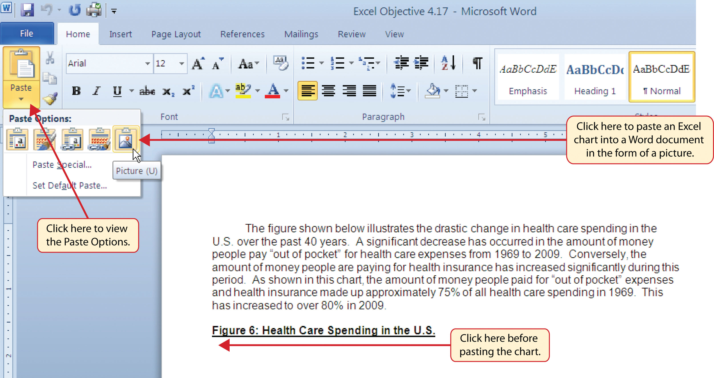
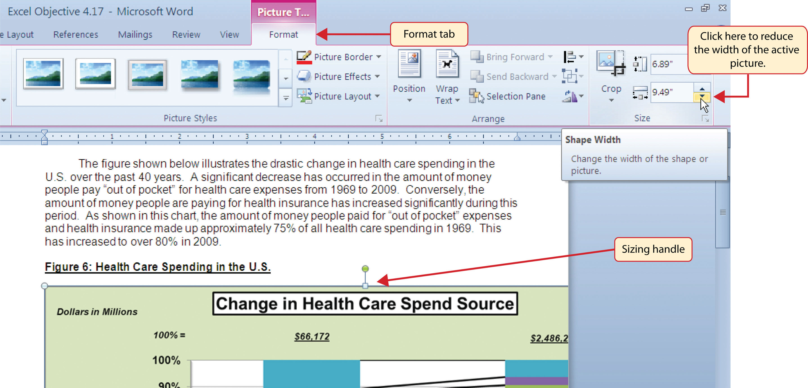
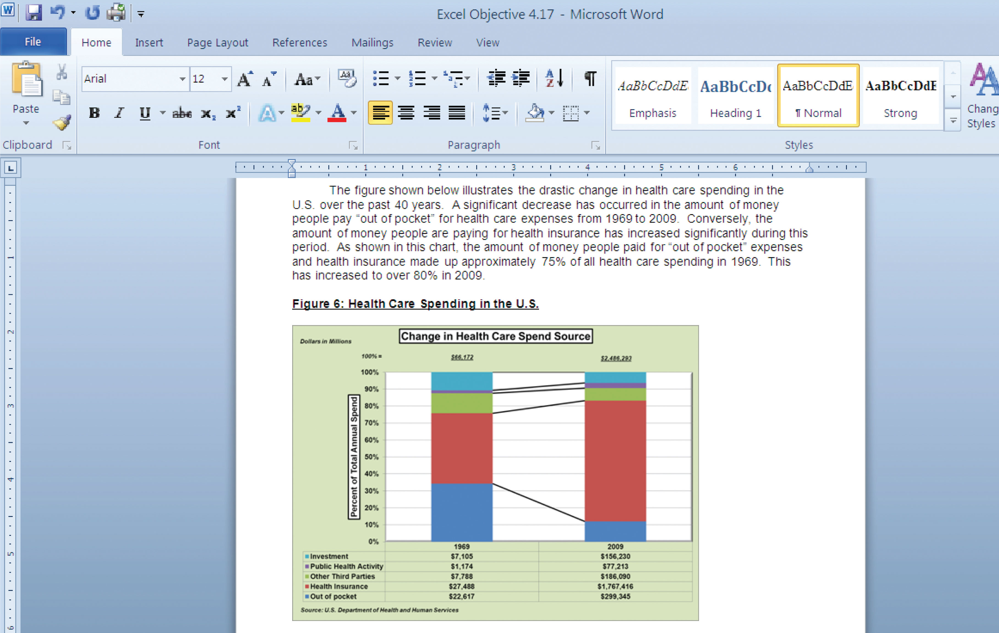
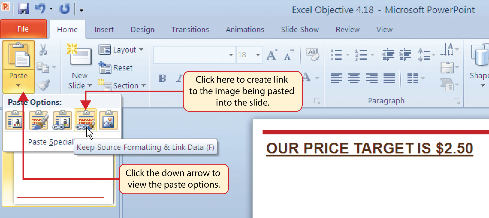
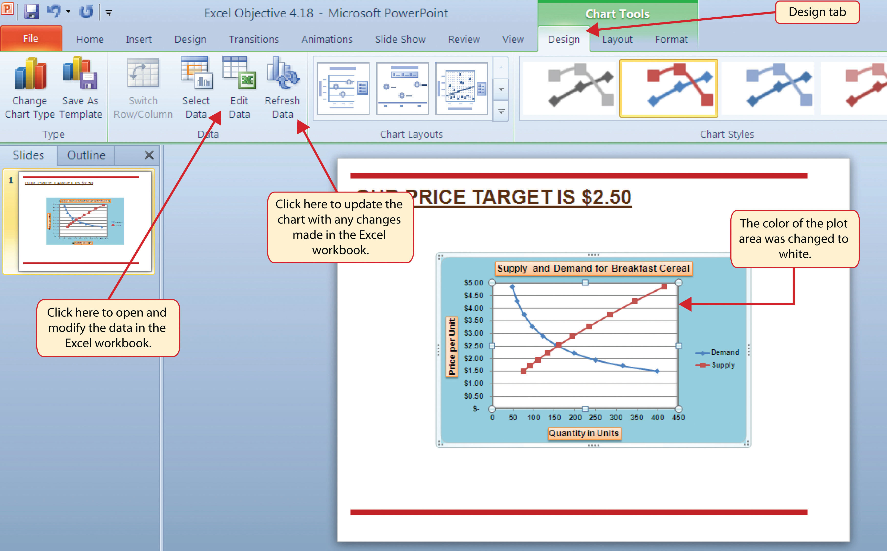

Charts that are created in Excel are commonly used in Microsoft Word documents or for presentations that use Microsoft PowerPoint slides. Excel provides options for pasting an image of a chart into either a Word document or a PowerPoint slide. You can also establish a link to your Excel charts so that if you change the data in your Excel file, it is automatically reflected in your Word or PowerPoint files. We will demonstrate both methods in this section.
Follow-along file: Excel Objective 4.17
Excel charts can be valuable tools for explaining quantitative data in a written report. Reports that address business plans, public policies, budgets, and so on all involve quantitative data. For this example, we will assume that the Change in Health Care Spend Source stacked column chart (see Figure 4.44 "Completed Stacked Column Chart with Annotations") is being used in a written policy report. The following steps demonstrate how to paste an image, or picture, of this chart into a Word document:
Click the Format tab under the Picture Tools section of the Ribbon (see Figure 4.58 "Changing the Size of a Picture in Word").
Figure 4.57 Paste Picture Option for Word
Figure 4.58 Changing the Size of a Picture in Word
Figure 4.59 "Final Appearance of Pasting a Chart Image into Word" shows the final appearance of the Change in Health Care Spend Source chart pasted into a Word document. It is best to use either the Shape Width or Shape Height buttons to reduce the size of the chart. Using either button automatically reduces the height and width of the chart in proper proportion. If you choose to use the sizing handles to resize the chart, holding the SHIFT key while clicking and dragging on a corner sizing handle will also keep the chart in proper proportion.
Figure 4.59 Final Appearance of Pasting a Chart Image into Word
Follow-along file: Excel Objective 4.18
Microsoft PowerPoint is perhaps the most commonly used tool for delivering live presentations. The charts used in a live presentation are critical for efficiently delivering your ideas to an audience. Similar to written documents, a wide range of presentations may require the explanation of quantitative data. This demonstration includes a PowerPoint slide that could be used in a presentation for setting prices for a hypothetical breakfast cereal company. We will paste the scatter chart showing the supply and demand for breakfast cereal into this PowerPoint slide. However, instead of pasting an image, as demonstrated in the Word document, we will establish a linkA dynamic connection between two files, worksheets, or cell locations. Any change in the source file will be reflected in the file, worksheet, or cell that contains the link. to the Excel file. As a result, if we change the chart in the Excel file, the change will be reflected in the PowerPoint file. The following steps explain how to accomplish this:
Select the Keep Source Formatting & Link Data option from the drop-down list (see Figure 4.60 "Creating a Link to an Excel Chart in PowerPoint"). This pastes an image of the Excel chart into the PowerPoint slide. In addition, a link is created so that any changes made to the chart appear on the PowerPoint slide.
Figure 4.60 Creating a Link to an Excel Chart in PowerPoint
Click anywhere in the plot area of the scatter chart pasted into the PowerPoint slide. You will see the same Excel Chart Tools tabs added to the Ribbon (see Figure 4.61 "Modifying an Excel Chart Pasted into a PowerPoint Slide").
Figure 4.61 Modifying an Excel Chart Pasted into a PowerPoint Slide

Refreshing Linked Charts in PowerPoint and Word
When creating a link to a chart in Word or PowerPoint, you must refresh the data if you make any changes in the Excel workbook. This is especially true if you make changes in the Excel file prior to opening the Word or PowerPoint file that contains a link to a chart. To refresh the chart, make sure it is activated, then click the Refresh Data button in the Design tab of the Ribbon. Forgetting this step can result in old or erroneous data being displayed on the chart.
Figure 4.62 "Refreshing a Linked Excel Chart Pasted into a PowerPoint Slide" shows the appearance of the scatter chart in the PowerPoint slide after the color of the plot area was changed back to white. Figure 4.63 "Final Chart Linked to a PowerPoint Slide" shows the appearance of the scatter plot after the change was made in the Supply & Demand worksheet in the Excel file. The change that was made in the Excel file will appear in the PowerPoint file after clicking the Refresh Data button.
Figure 4.62 Refreshing a Linked Excel Chart Pasted into a PowerPoint Slide
Figure 4.63 Final Chart Linked to a PowerPoint Slide

Severed Link?
When creating a link to an Excel chart in Word or PowerPoint, you must keep the Excel workbook in its original location on your computer or network. If you move or delete the Excel workbook, you will get an error message when you try to update the link in your Word or PowerPoint file. You will also get an error if the Excel workbook is saved on a network drive that your computer cannot access. These errors occur because the link to the Excel workbook has been severed. Therefore, if you know in advance that you will be using a USB drive to pull up your documents or presentation, move the Excel workbook to your USB drive before you establish the link in your Word or PowerPoint file.
When pasting an image of an Excel chart into a Word document, which of the following commands would you use?
Which of the following is true with respect to creating a linked chart image in a PowerPoint slide?